Cradle of culture
Africa: Great Lakes and Indian Ocean
East Africa, the Great Lakes and the island world of the Indian Ocean.
Deep Past and First Games 11
Bao
Comoros · Board and table gamesBao la Kiswahili
Kenya +1 · Board and table gamesBawo
Malawi · Board and table gamesEnkeshui
Tanzania +1 · Board and table gamesHighland and river mancalas
Kenya · Board and table gamesIgisoro
Rwanda +1 · Board and table gamesKatro / Katra
Madagascar · Board and table gamesKibao
Tanzania · Street and playground gamesMakonn
Seychelles · Board and table gamesNsolo
Zambia +1 · Board and table gamesOmweso
Uganda · Board and table games
River Valleys and First Cities 1
Savika
Madagascar · Street and playground games
Classical Worlds 6
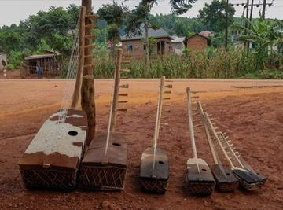
Adungu
Uganda · Musical instrumentsChamp de Mars turf
Mauritius · Sports with animal partners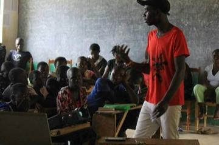
Kitendawili
Kenya · Puzzles and mind games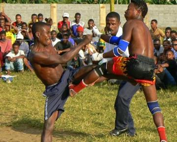
Moraingy drum-and-strike duel
Madagascar · Wrestling and martial sports
Nyatiti Luo lyre
Kenya · Musical instruments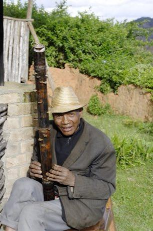
Valiha tube zither
Madagascar · Musical instruments
Crossroads and Golden Ages 5
Fanoron-Telo
Madagascar · Board and table gamesFanorona
Madagascar · Board and table gamesOdede
Uganda · Board and table gamesShisima
Kenya · Board and table gamesTanzanian draughts
Tanzania · Board and table games
Age of Contact and Craft 1
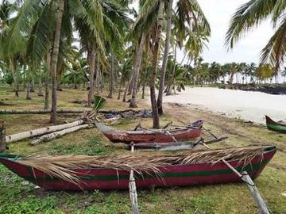
Ngalawa outrigger sailing
Comoros · Racing
Modern Heritage 6
Living Traditions 14
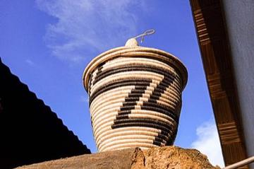
Agaseke basket weaving
Rwanda · Crafts and making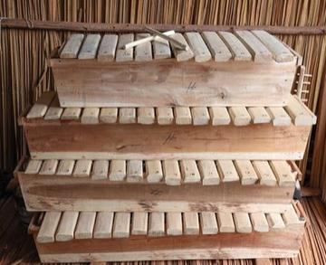
Amadinda and embaire
Uganda · Musical instruments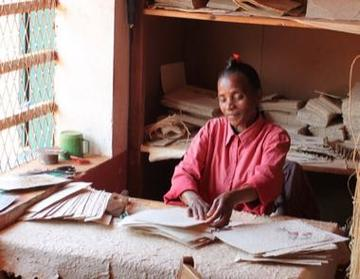
Antaimoro flower paper
Madagascar · Crafts and making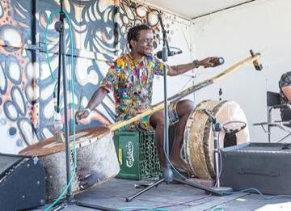
Babatone
Malawi · Musical instruments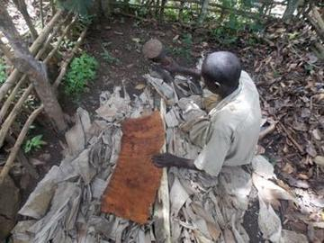
Buganda barkcloth making
Uganda · Crafts and making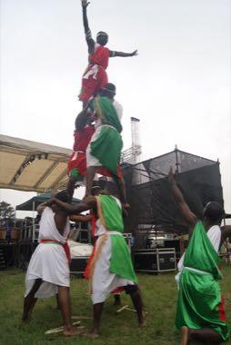
Burundian drum ensemble
Burundi · Musical instruments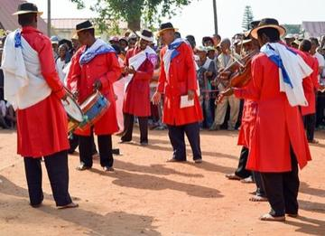
Hira gasy village troupe contest
Madagascar · Performance and storytelling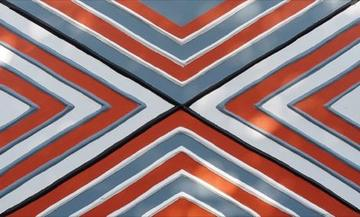
Imigongo geometric painting
Rwanda · Crafts and making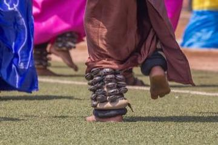
Intore dance
Rwanda · Dances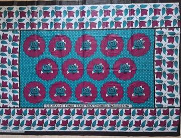
Kanga cloth design
Kenya · Crafts and making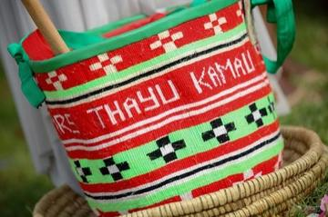
Kiondo basket weaving
Kenya · Crafts and making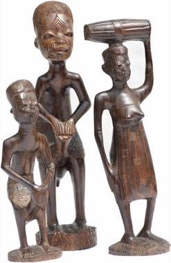
Makonde ebony carving
Tanzania +1 · Crafts and making
Swahili carved door
Kenya · Crafts and making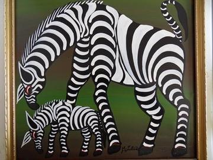
Tingatinga painting
Tanzania · Crafts and making